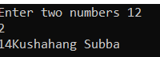
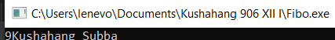
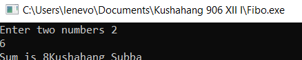
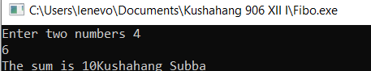
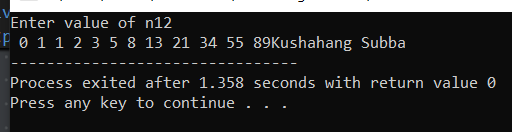
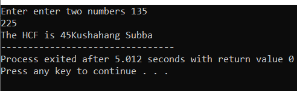
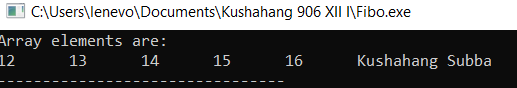

C Programming
Functions
A function is a reusable block of code designed to perform a specific task.
Syntax:
return type function (paramater list);
{
Statement;
}
Types of Functions:
- 1.Library Functions:
- The functions which are predeifined in a header file are called library functions. e.g: scanf, prinf
- 2.User Defined Functions:
- The functions defined by the programmer according to requirement are called user defined finctions.
Compoents of function
- i. Function Prototype
-
A declaration that tells the compiler about the function's name, return type, and parameters before its actual definition.
Example: int add(int a, int b);
- ii. Function Call
-
Invokes the function to execute its task. Arguments are passed that match the parameters.
Example: int result = add(5, 3);
- iii. Function Definition
-
The actual body of the function where logic is written.
Example: int add(int a, int b) { return a + b; }
- iv. Return Type
-
Specifies the type of value the function returns, such as
int, float, or void.
Example: float calculateArea(float radius);
Categories of Function
- i. Function with return type but no arguments
-
#include <stdio.h>
int sum(); //function prototype
int main()
{
int S=sum();
printf ("%d",S);
printf ("Kushahang Subba");
return 0;
}
int sum() //function definition
{
int a,b;
printf ("Enter two numbers");
scanf ("%d %d",&a,&b);
return a+b;;
}

- ii. Function with return type with arguments
-
#include <stdio.h>
int sum(int,int); //function prototype
int main()
{
int S=sum(4,5);
printf ("%d",S);
printf ("Kushahang Subba");
return 0;
}
int sum (int a, int b)
{
return a+b;
}

- iii. Function with no return type with no arguments
#include <stdio.h>
void sum(); //function prototype
int main()
{
sum ();
printf ("Kushahang Subba");
return 0;
}
void sum ()
{
int a,b,s;
printf ("Enter two numbers");
scanf ("%d %d",&a,&b);
s=a+b;
printf ("Sum is %d",s);
}

- iv. Function with no return type with arguments
-
#include <stdio.h>
void sum(int,int); //function prototype
int main()
{
int a,b;
printf ("Enter two numbers");
scanf ("%d %d",&a,&b);
sum (a,b);
printf ("Kushahang Subba");
return 0;
}
void sum (int a,int b)
{
int s;
s=a+b;
printf ("The sum is %d",s);
}

Storage Class
- 1. Atomatic Storage Class
-
- It is the default value for all local variables (Default:Garbage)
- It is stored in th RAM
- It is local in scope and lasts until the function ends
- 2. External Storage Class
-
- It is global in scope meaning it can be used in any part of the program
- Its default value is 0
- Its lifetime is the programs lifetime
- 3. Register Storage Class
-
- It is stored in the registers of the CPU meaning it is faster to access
- It is limited in scope to a singular block
- It lifetime is the same as Auto (until the function ends)
- 4. Static Storage Class
-
- It retains it value between function calls and will last till the end of the program
- It is stored in the ram and has a default value of 0
- It is limited to a function
Recursive Function
The function which calls itself is called a recursive function. The act of using a recursive function to repeat statements multiple times in a loop is known as recursion.
Syntax:
return type function (paramater list);
{
Statement;
function (new parameter list);
}
Some uses of recursion are:
Fibonacci series
#include <stdio.h>
int fibo(int);
int main()
{
int f,i,n;
printf ("Enter value of n");
scanf ("%d",&n);
for (i=0; i<& n; i++)
{
printf ("%d",fibo(i));
}
printf ("Kushahang Subba");
return 0;
}
int fibo (int n)
{
if (n==0 || n==1)
return n;
else
return fibo (n-1)+fibo(n-2);
}

HCF
#include #include <stdio.h>
int HCF(int,int);
int main()
{
int a,b;
printf ("Enter enter two numbers");
scanf ("%d %d",&a;,&b);
printf ("The HCF is %d",HCF(a,b));
printf ("Kushahang Subba");
return 0;
}
int HCF (int a,int b)
{
int r,q;
if (a>b)
{
q=a/b;
r=a-(b*q);
}
else
{
q=b/a;
r=b-(a*q);
}
if (r==0)
return b;
else
return HCF (b,r);
}

Passing Array in Function
#include <stdio.h>
void change(int[]);
int main()
{
int a[5]={2,3,4,5,6};
change(a);
printf ("Array elements are:\n");
int i;
for (i=0; i <& 5; i++)
{
printf ("%d \t",a[i]);
}
printf ("Kushahang Subba");
return 0;
}
void change (int a[])
{
int i;
for (i=0; i < 5, i++)
{
a[i]=a[i]+10;
}
}
